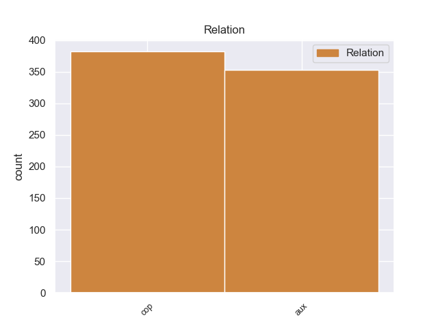
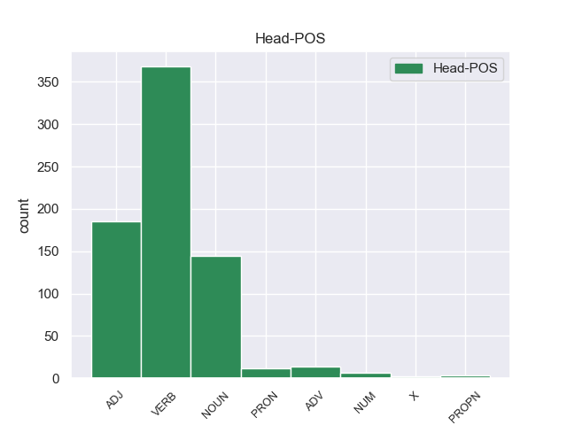
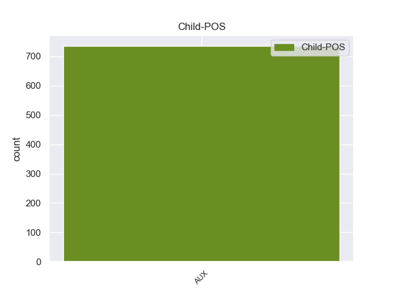

Distribution of features within this leaf



non-conforming Examples:
1 Η _ _ _ _ 0 _ _ _
2 σημαντικότητα _ _ _ _ 0 _ _ _
3 του _ _ _ _ 0 _ _ _
4 Αχέροντα _ _ _ _ 0 _ _ _
5 ήταν είμαι AUX AUX Aspect=Imp|Mood=Ind|Number=Sing|Person=3|Tense=Past|VerbForm=Fin|Voice=Pass 6 cop _ _
6 μεγάλη μεγάλος ADJ ADJ Case=Nom|Gender=Fem|Number=Sing 0 _ _ _
7 κατά _ _ _ _ 0 _ _ _
8 την _ _ _ _ 0 _ _ _
9 αρχαιότητα _ _ _ _ 0 _ _ _
10 , _ _ _ _ 0 _ _ _
11 οπότε _ _ _ _ 0 _ _ _
12 και _ _ _ _ 0 _ _ _
13 ιδρύθηκε _ _ _ _ 0 _ _ _
14 σ _ _ _ _ 0 _ _ _
15 την _ _ _ _ 0 _ _ _
16 βορειοανατολική _ _ _ _ 0 _ _ _
17 όχθη _ _ _ _ 0 _ _ _
18 της _ _ _ _ 0 _ _ _
19 Αχερουσίας _ _ _ _ 0 _ _ _
20 το _ _ _ _ 0 _ _ _
21 Νεκρομαντείο _ _ _ _ 0 _ _ _
22 , _ _ _ _ 0 _ _ _
23 ο _ _ _ _ 0 _ _ _
24 σημαντικότερος _ _ _ _ 0 _ _ _
25 τόπος _ _ _ _ 0 _ _ _
26 επικοινωνίας _ _ _ _ 0 _ _ _
27 με _ _ _ _ 0 _ _ _
28 τους _ _ _ _ 0 _ _ _
29 νεκρούς _ _ _ _ 0 _ _ _
30 και _ _ _ _ 0 _ _ _
31 λατρείας _ _ _ _ 0 _ _ _
32 των _ _ _ _ 0 _ _ _
33 θεών _ _ _ _ 0 _ _ _
34 του _ _ _ _ 0 _ _ _
35 Κάτω _ _ _ _ 0 _ _ _
36 Κόσμου _ _ _ _ 0 _ _ _
37 . _ _ _ _ 0 _ _ _
1 Ακτιβιστές _ _ _ _ 0 _ _ _
2 αναφέρουν _ _ _ _ 0 _ _ _
3 ότι _ _ _ _ 0 _ _ _
4 « _ _ _ _ 0 _ _ _
5 ολόκληρη _ _ _ _ 0 _ _ _
6 η _ _ _ _ 0 _ _ _
7 πόλη _ _ _ _ 0 _ _ _
8 της _ _ _ _ 0 _ _ _
9 Χομς _ _ _ _ 0 _ _ _
10 είναι είμαι AUX AUX Aspect=Imp|Mood=Ind|Number=Sing|Person=3|Tense=Pres|VerbForm=Fin|Voice=Pass 11 cop _ _
11 αντιμέτωπη αντιμέτωπος ADJ ADJ Case=Nom|Gender=Fem|Number=Sing 0 _ _ _
12 με _ _ _ _ 0 _ _ _
13 μια _ _ _ _ 0 _ _ _
14 ανθρωπιστική _ _ _ _ 0 _ _ _
15 καταστροφή _ _ _ _ 0 _ _ _
16 . _ _ _ _ 0 _ _ _
1 Ηλεκτρικό _ _ _ _ 0 _ _ _
2 , _ _ _ _ 0 _ _ _
3 νερό _ _ _ _ 0 _ _ _
4 και _ _ _ _ 0 _ _ _
5 επικοινωνίες _ _ _ _ 0 _ _ _
6 έχουν έχω AUX AUX Aspect=Imp|Mood=Ind|Number=Plur|Person=3|Tense=Pres|VerbForm=Fin|Voice=Act 7 aux _ _
7 διακοπεί διακόπτω VERB VERB Aspect=Perf|VerbForm=Inf|Voice=Pass 0 _ _ _
8 , _ _ _ _ 0 _ _ _
9 καθώς _ _ _ _ 0 _ _ _
10 σ _ _ _ _ 0 _ _ _
11 την _ _ _ _ 0 _ _ _
12 περιοχή _ _ _ _ 0 _ _ _
13 επικρατούν _ _ _ _ 0 _ _ _
14 τις _ _ _ _ 0 _ _ _
15 τελευταίες _ _ _ _ 0 _ _ _
16 ημέρες _ _ _ _ 0 _ _ _
17 χαμηλές _ _ _ _ 0 _ _ _
18 θερμοκρασίες _ _ _ _ 0 _ _ _
19 και _ _ _ _ 0 _ _ _
20 έντονες _ _ _ _ 0 _ _ _
21 χιονοπτώσεις _ _ _ _ 0 _ _ _
22 . _ _ _ _ 0 _ _ _
1 Ο _ _ _ _ 0 _ _ _
2 Γενικός _ _ _ _ 0 _ _ _
3 Γραμματέας _ _ _ _ 0 _ _ _
4 των _ _ _ _ 0 _ _ _
5 Ηνωμένων _ _ _ _ 0 _ _ _
6 Εθνών _ _ _ _ 0 _ _ _
7 , _ _ _ _ 0 _ _ _
8 Μπαν _ _ _ _ 0 _ _ _
9 Κι _ _ _ _ 0 _ _ _
10 Μουν _ _ _ _ 0 _ _ _
11 , _ _ _ _ 0 _ _ _
12 ανέφερε _ _ _ _ 0 _ _ _
13 την _ _ _ _ 0 _ _ _
14 Παρασκευή _ _ _ _ 0 _ _ _
15 ότι _ _ _ _ 0 _ _ _
16 « _ _ _ _ 0 _ _ _
17 έχει έχω AUX AUX Aspect=Imp|Mood=Ind|Number=Sing|Person=3|Tense=Pres|VerbForm=Fin|Voice=Act 18 aux _ _
18 λάβει λαμβάνω VERB VERB Aspect=Perf|VerbForm=Inf|Voice=Act 0 _ _ _
19 μακάβριες _ _ _ _ 0 _ _ _
20 πληροφορίες _ _ _ _ 0 _ _ _
21 , _ _ _ _ 0 _ _ _
22 σύμφωνα _ _ _ _ 0 _ _ _
23 με _ _ _ _ 0 _ _ _
24 τις _ _ _ _ 0 _ _ _
25 οποίες _ _ _ _ 0 _ _ _
26 οι _ _ _ _ 0 _ _ _
27 δυνάμεις _ _ _ _ 0 _ _ _
28 ασφάλειας _ _ _ _ 0 _ _ _
29 συλλαμβάνουν _ _ _ _ 0 _ _ _
30 και _ _ _ _ 0 _ _ _
31 βασανίζουν _ _ _ _ 0 _ _ _
32 ανθρώπους _ _ _ _ 0 _ _ _
33 σ _ _ _ _ 0 _ _ _
34 τη _ _ _ _ 0 _ _ _
35 Χομς _ _ _ _ 0 _ _ _
36 μετά _ _ _ _ 0 _ _ _
37 την _ _ _ _ 0 _ _ _
38 αποχώρηση _ _ _ _ 0 _ _ _
39 των _ _ _ _ 0 _ _ _
40 ανταρτών _ _ _ _ 0 _ _ _
41 » _ _ _ _ 0 _ _ _
42 . _ _ _ _ 0 _ _ _
1 Αυτά _ _ _ _ 0 _ _ _
2 τα _ _ _ _ 0 _ _ _
3 ποσοστά _ _ _ _ 0 _ _ _
4 είναι είμαι AUX AUX Aspect=Imp|Mood=Ind|Number=Plur|Person=3|Tense=Pres|VerbForm=Fin|Voice=Pass 7 cop _ _
5 τα _ _ _ _ 0 _ _ _
6 πιο _ _ _ _ 0 _ _ _
7 χαμηλά χαμηλός ADJ ADJ Case=Nom|Gender=Neut|Number=Plur 0 _ _ _
8 από _ _ _ _ 0 _ _ _
9 τότε _ _ _ _ 0 _ _ _
10 που _ _ _ _ 0 _ _ _
11 το _ _ _ _ 0 _ _ _
12 IFOP _ _ _ _ 0 _ _ _
13 ξεκίνησε _ _ _ _ 0 _ _ _
14 δημοσκοπήσεις _ _ _ _ 0 _ _ _
15 σ _ _ _ _ 0 _ _ _
16 τη _ _ _ _ 0 _ _ _
17 Γαλλία _ _ _ _ 0 _ _ _
18 μετά _ _ _ _ 0 _ _ _
19 τα _ _ _ _ 0 _ _ _
20 γεγονότα _ _ _ _ 0 _ _ _
21 της _ _ _ _ 0 _ _ _
22 11ης _ _ _ _ 0 _ _ _
23 Σεπτεμβρίου _ _ _ _ 0 _ _ _
24 2001 _ _ _ _ 0 _ _ _
25 . _ _ _ _ 0 _ _ _